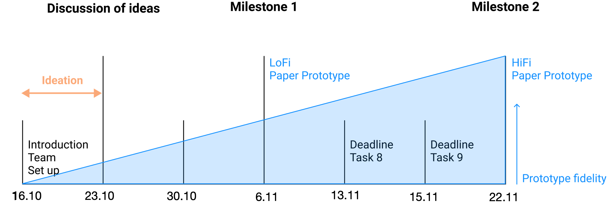
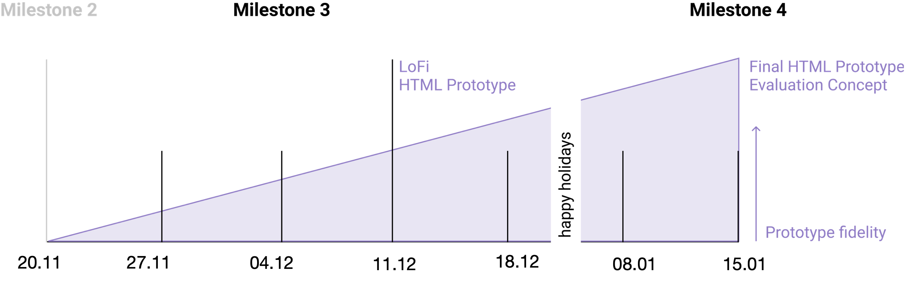
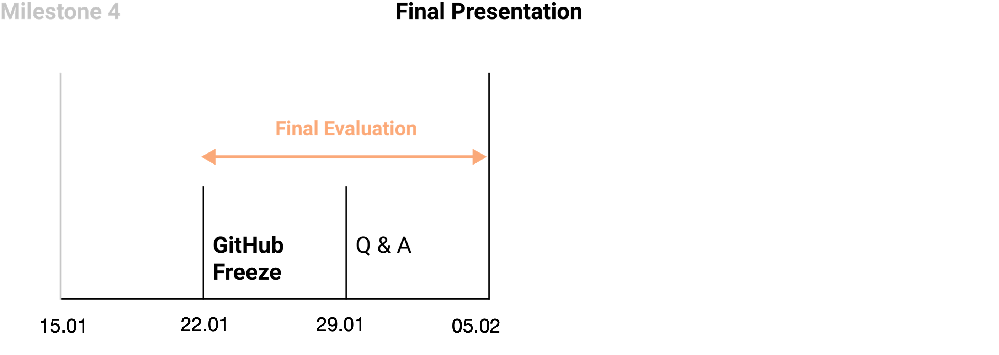

Overview
Phase 1: Paper Prototyping

- 16.10.22: Team assignment / Course introduction / Set up
- 23.10.22: Discussion of ideas
- 29.10.22: Group work
- 06.11.22: Deadline iteration 1 + milestone presentation 1
- 13.11.22: Group work
- 20.11.22: Deadline iteration 2 + milestone presentation 2
Phase 2: HTML Prototyping

- 27.11.22: Group work
- 04.12.22: Group work
- 11.12.22: Deadline iteration 3 + milestone presentation 3
- 18.12.22: free
- 08.01.23: Group work
- 15.01.23: Deadline iteration 4 + milestone presentation 4
Phase 3: Final Evaluation

- 22.01.23: Freeze of GitHub: finalization of prototype
- 29.01.23: Questions & answers
- 05.02.23: Deadline final evaluation + final presentation